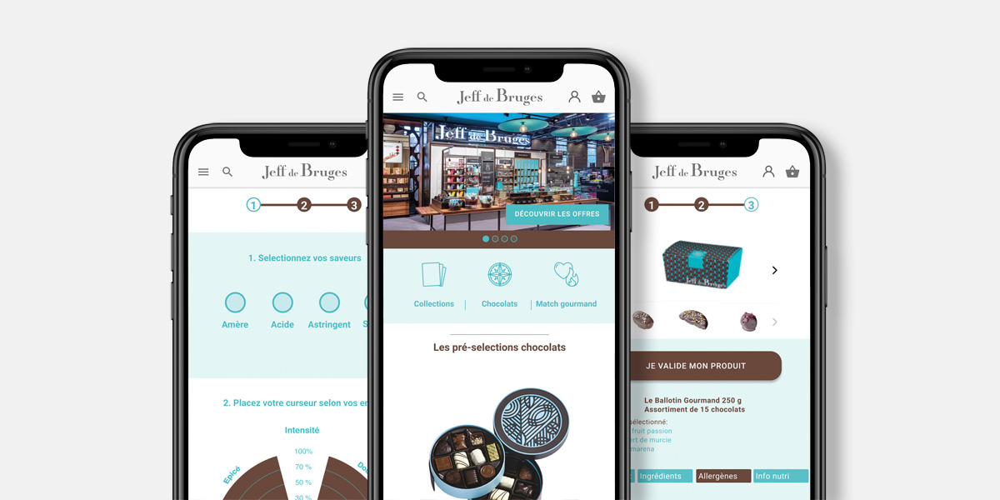

¬ Projets UX avec porteurs de projet - Façon "Design Sprint"

LegItBee
Plateforme permettant d'inventorier et de gérer son patrimoine numérique, mais aussi de définir ses héritiers.

Les Corsaires
Plateforme d’entraide gratuite dont le but est d’apporter une aide centralisée aux propriétaires investisseurs.

WizAgri
Plateforme permettant d'être ou d'informer sur différents incidents autour d'une propriété ou parcelle.
¬ Projets UX au cours de la Formation

Auchan Photo
Projet n°1

Meilleurs Taux
Projet n°2

Auchan Drive
Projet n°3

Dragonavirus
Projet n°4

Jeff de Bruges
Projet n°5
¬ Méthodo
Étude de cas
Journal de bord d'un UX Designer entre quelques jours de liberté et la période du confinement sur le projet Auchan Drive.

Les rôles dans l'UX
Pour qu'un projet se déroule sans accro, nous avons besoin d'un Facilitateur, d'un Interviewer, d'un Décideur et d'une équipe UX.